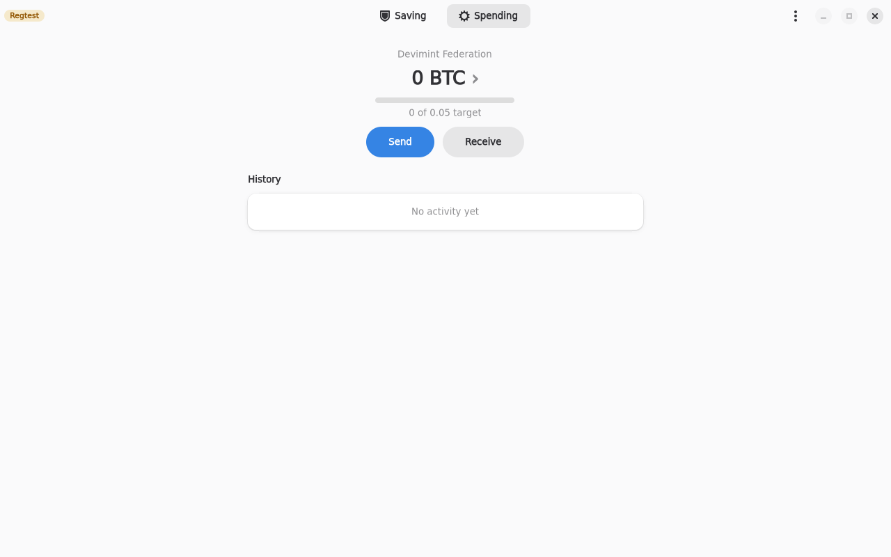
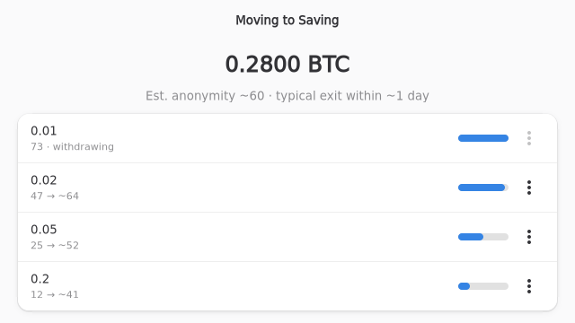
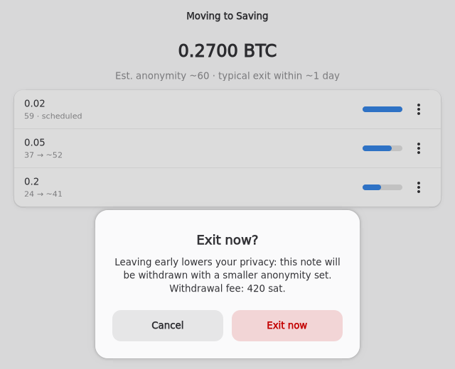

3-minute talk script
Hook
Moving bitcoin between a hot wallet and cold storage leaks your history. Whoever sees the coin arrive can follow it out.
Fedimix fixes that. It is a Linux wallet with two sides: Spending, which is Fedimint ecash, and Saving, which is on-chain cold storage. I will show one flow: deposit, wait, withdraw. Moving between the two sides is exactly where privacy usually breaks, so that is the part we built Fedimix around. I will skip joining a federation, you only do that once.

Deposit
A quick honesty note. This exits flow runs on our demo backend, so it is simulated. The real backend's exits are still being finished.
Money lands in Spending as ecash, ready to pay over Lightning or on chain. Spending has a target balance that you choose. This screen is called Moving to Saving.
Anything above the target, here 0.28 bitcoin, is split into common denominations and queued: 0.01, 0.02, 0.05 and 0.2.

Waiting for the anon set
Each row shows its anonymity estimate, the anon set: roughly how many other deposits it could be mistaken for. It rises as other people deposit into the federation. The bar shows progress toward the target, for example 22 heading to about 52.
The header says estimated anonymity about 60, and typical exit within about one day. You do nothing while you wait. The app watches the number for you.
Exits are not on a fixed timer. Each coin waits a random, Poisson-distributed time that gets shorter as anonymity grows, so the moment it leaves reveals nothing. An observer cannot match a deposit time to an exit time.

Auto withdrawal
When a coin's time comes, it exits by itself. Here the 0.01 coin is withdrawing. In Saving it shows as depositing, then lands.
It arrives tagged with its anon set at exit, here 73, so you always know how private each coin is. An unmixed coin shows in red.
And if you need money now, choose Exit now. It shows the fee, 420 satoshis, and warns that privacy is lower. The coin lands tagged anon set 59, early exit, so you can see which ones left early. Nothing is hidden from you.



Close the loop
The loop closes. When you send from Saving, the change is paid back into Spending as ecash, instead of staying on chain. Refill tops Spending up when it runs low. Those two parts run for real on a local regtest federation.
That is Fedimix: deposit, wait, exit privately, and spend. Thanks for listening.